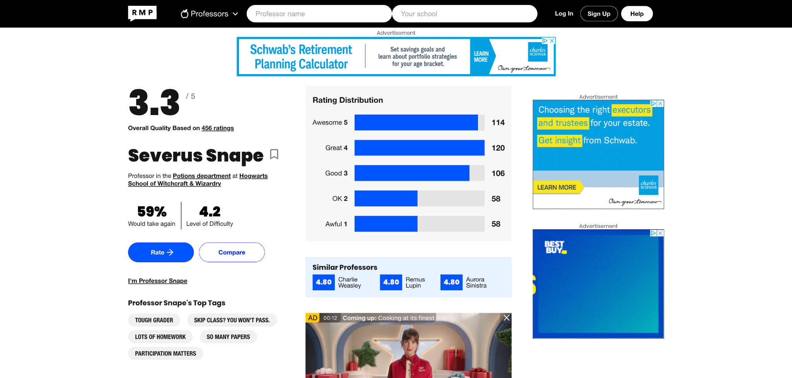
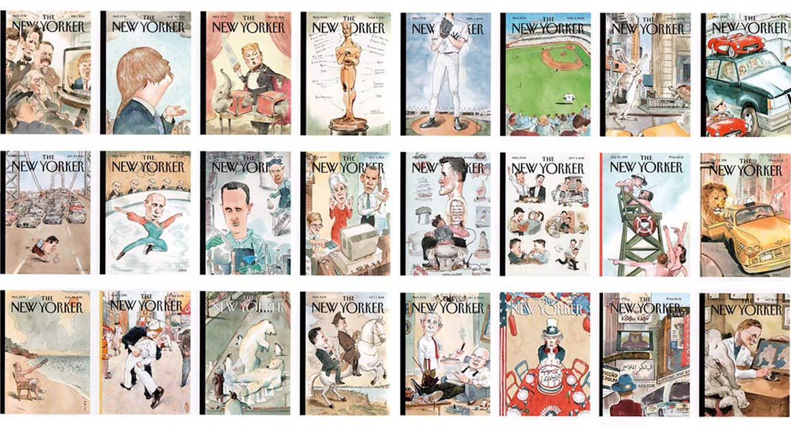

Erin Abrams
Full‑stack product & platform leader driving scalable media experiences through AI, analytics, and bold product strategy. I turn technical ambiguity into meaningful user impact and ship tools that simplify complexity across organizations.
Work / Projects
Principal Product Manager, Rate My Professors
Currently leading all product strategy and execution for Rate My Professors, with a focus on improving usability, increasing trust, and driving sustainable revenue growth. Introduced new professor and course discovery experiences, revamped ad infrastructure, and launched A/B-tested UX improvements. Exceeded revenue goals by 25% in the most recent quarter.
Technical Product Manager, Condé Nast – Verso Platform
Owned the product roadmap for Verso, Condé Nast’s design system and publishing platform used across brands like The New Yorker and Vogue. Collaborated with engineers and designers to scale reusable components, reduce redundant work, and ensure fast, consistent multi-brand deployments.
Data Product Manager, Condé Nast – Spire Data Platform
Led product for Spire, the company's proprietary data and targeting platform. Designed tools and pipelines that powered campaign targeting, real-time performance reporting, and high-ROI audience segments. Oversaw cross-functional data operations spanning strategy, privacy, and advertiser tooling.
Volunteer Work
Brooklyn Cat Cafe
Volunteer on the main floor, supporting both guests and adoptable cats. I help maintain a welcoming, safe space for visitors, provide care and enrichment for the animals, and assist with adoption matchmaking to ensure cats are placed in loving homes.
Planned Parenthood
Served as a volunteer patient escort, helping individuals safely and privately access care by providing a calm, supportive presence outside the clinic. I ensured patients could enter the building without facing intimidation or harassment.
Favorite Reads
- Station Eleven – Emily St. John Mandel
- The Wager – David Grann
- They’re Going to Love You – Meg Howrey
- The Heaven & Earth Grocery Store – James McBride
- The Nightingale – Kristin Hannah
Skills & Tools
- Product Strategy
- UX / UI Design Collaboration
- Data Analytics & Experimentation
- Full-stack PM Execution
- SQL, Retool, Metabase, Google Analytics, Productboard, Jira
Current Focus
Currently driving product development and monetization strategy for Rate My Professors while exploring advanced AI applications in content moderation, personalization, and insight generation. Offline, I’ve been experimenting with creative vegan cooking and spoiling my spicy tortoiseshell cat, Honey. I also have a deep personal interest in the cultural arts - an art history minor who never lost her love for museums, architecture, and storytelling through visual mediums.